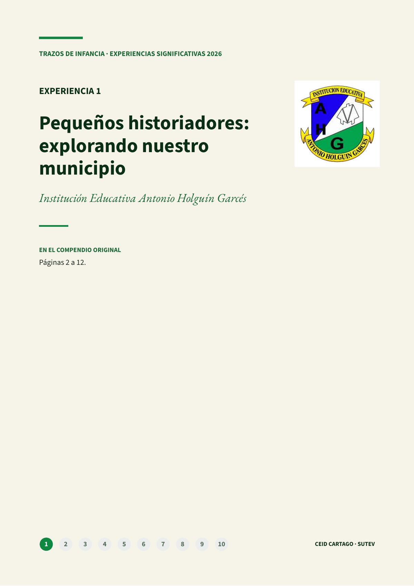
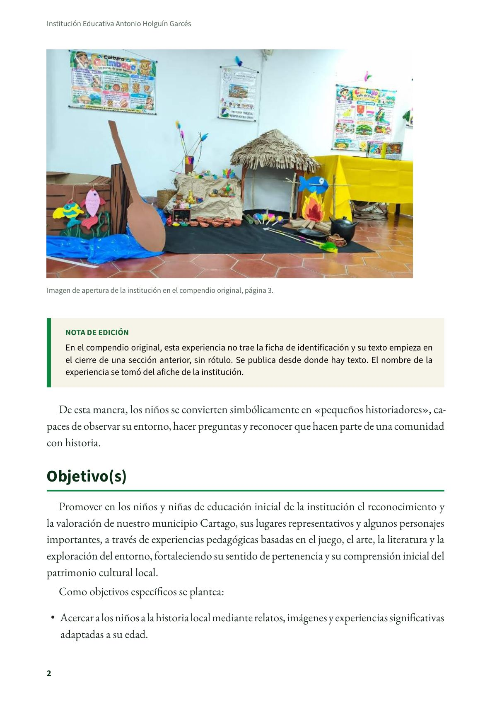
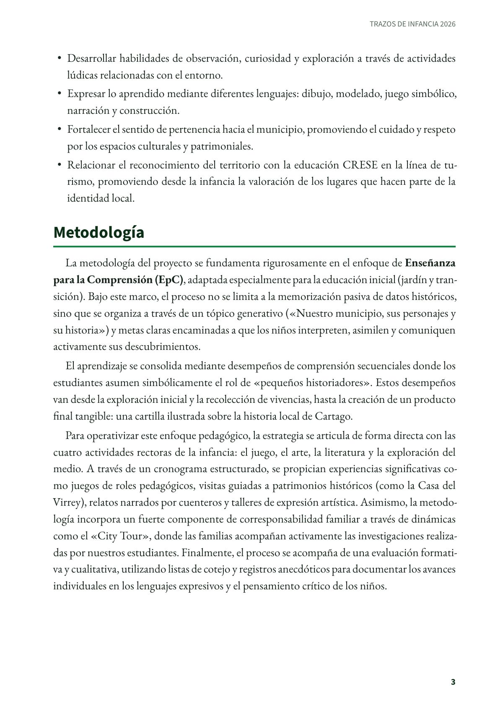
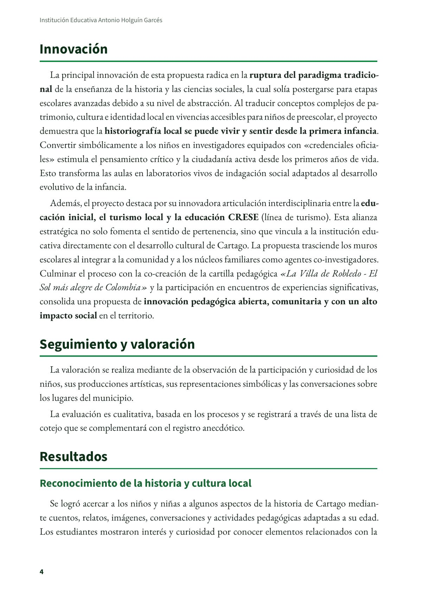
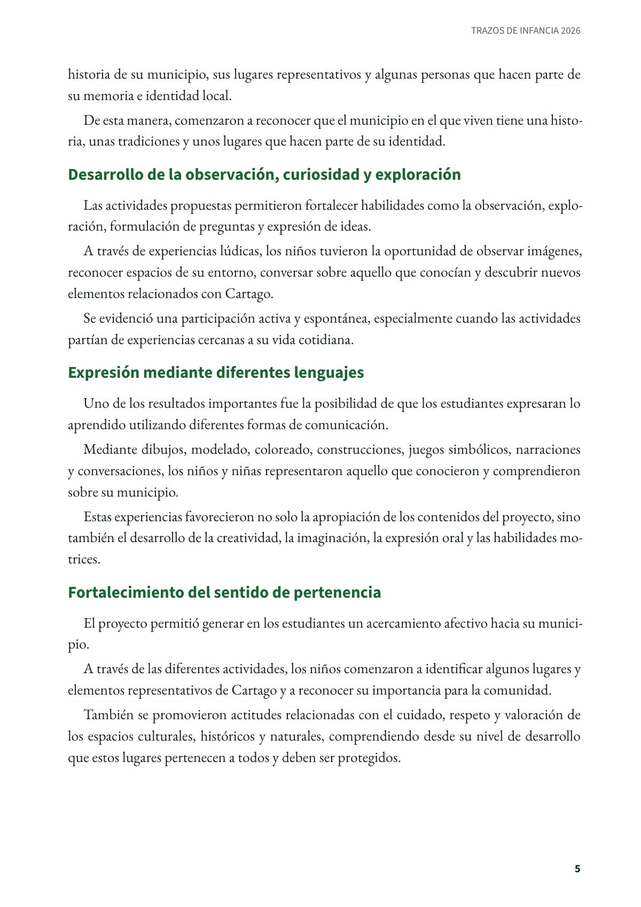
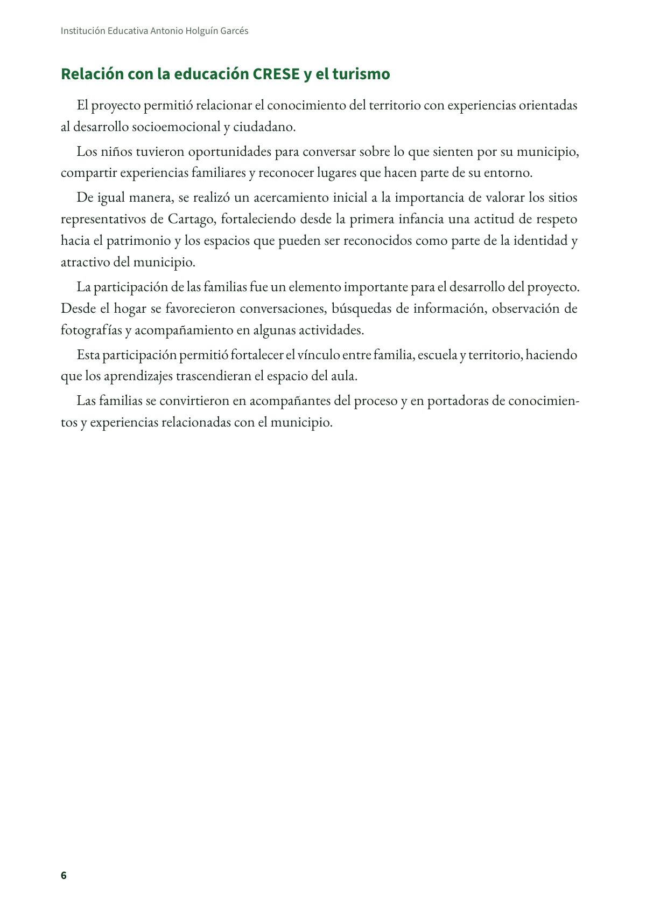
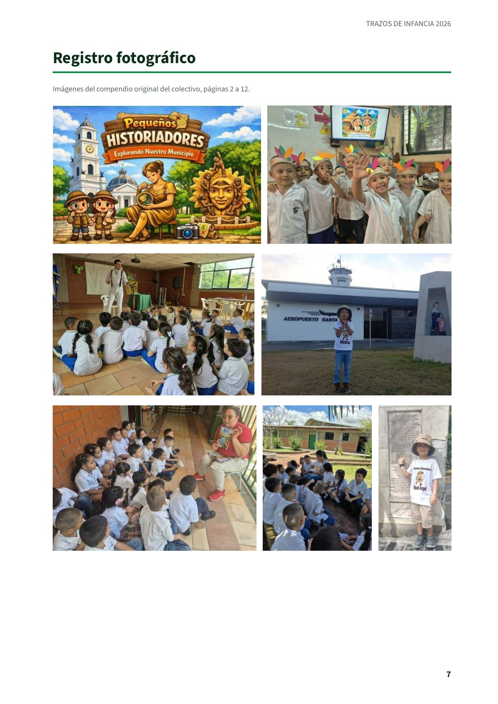
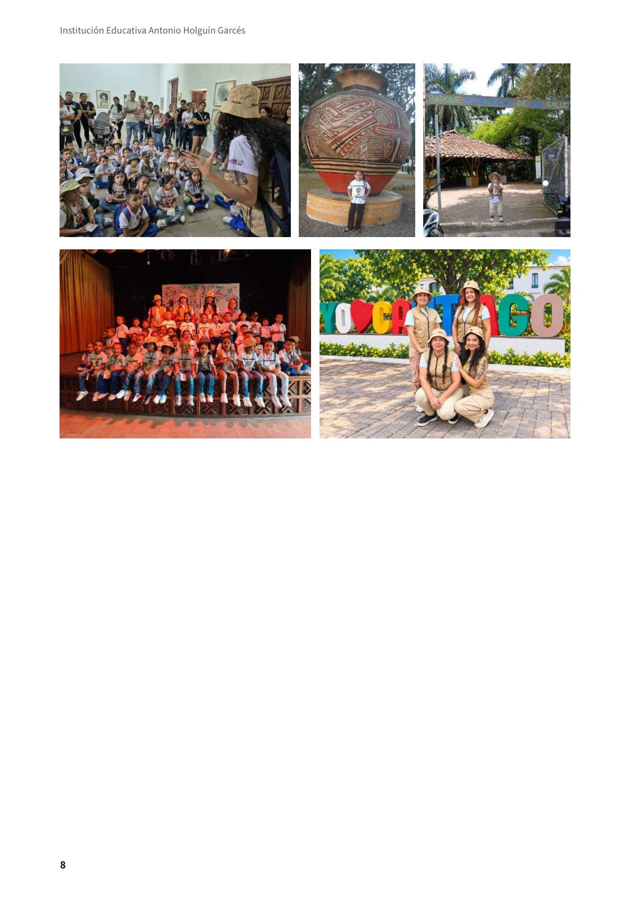

Pequeños historiadores: explorando nuestro municipio
Experiencia significativa en educación inicial de la Institución Educativa Antonio Holguín Garcés, de Cartago, tal como la presentaron sus maestras en el compendio del colectivo Trazos de Infancia.
PDF · 8 págs. · 468 KBNota de edición. En el compendio original, esta experiencia no trae la ficha de identificación (por eso no figuran sus maestras) y su texto empieza en el cierre de una sección anterior, sin rótulo. Se publica desde donde hay texto.
De esta manera, los niños se convierten simbólicamente en «pequeños historiadores», capaces de observar su entorno, hacer preguntas y reconocer que hacen parte de una comunidad con historia.
Objetivo(s)
Promover en los niños y niñas de educación inicial de la institución el reconocimiento y la valoración de nuestro municipio Cartago, sus lugares representativos y algunos personajes importantes, a través de experiencias pedagógicas basadas en el juego, el arte, la literatura y la exploración del entorno, fortaleciendo su sentido de pertenencia y su comprensión inicial del patrimonio cultural local.
Como objetivos específicos se plantea:
- Acercar a los niños a la historia local mediante relatos, imágenes y experiencias significativas adaptadas a su edad.
- Desarrollar habilidades de observación, curiosidad y exploración a través de actividades lúdicas relacionadas con el entorno.
- Expresar lo aprendido mediante diferentes lenguajes: dibujo, modelado, juego simbólico, narración y construcción.
- Fortalecer el sentido de pertenencia hacia el municipio, promoviendo el cuidado y respeto por los espacios culturales y patrimoniales.
- Relacionar el reconocimiento del territorio con la educación CRESE en la línea de turismo, promoviendo desde la infancia la valoración de los lugares que hacen parte de la identidad local.
Metodología
La metodología del proyecto se fundamenta rigurosamente en el enfoque de Enseñanza para la Comprensión (EpC), adaptada especialmente para la educación inicial (jardín y transición). Bajo este marco, el proceso no se limita a la memorización pasiva de datos históricos, sino que se organiza a través de un tópico generativo («Nuestro municipio, sus personajes y su historia») y metas claras encaminadas a que los niños interpreten, asimilen y comuniquen activamente sus descubrimientos.
El aprendizaje se consolida mediante desempeños de comprensión secuenciales donde los estudiantes asumen simbólicamente el rol de «pequeños historiadores». Estos desempeños van desde la exploración inicial y la recolección de vivencias, hasta la creación de un producto final tangible: una cartilla ilustrada sobre la historia local de Cartago.
Para operativizar este enfoque pedagógico, la estrategia se articula de forma directa con las cuatro actividades rectoras de la infancia: el juego, el arte, la literatura y la exploración del medio. A través de un cronograma estructurado, se propician experiencias significativas como juegos de roles pedagógicos, visitas guiadas a patrimonios históricos (como la Casa del Virrey), relatos narrados por cuenteros y talleres de expresión artística. Asimismo, la metodología incorpora un fuerte componente de corresponsabilidad familiar a través de dinámicas como el «City Tour», donde las familias acompañan activamente las investigaciones realizadas por nuestros estudiantes. Finalmente, el proceso se acompaña de una evaluación formativa y cualitativa, utilizando listas de cotejo y registros anecdóticos para documentar los avances individuales en los lenguajes expresivos y el pensamiento crítico de los niños.
Innovación
La principal innovación de esta propuesta radica en la ruptura del paradigma tradicional de la enseñanza de la historia y las ciencias sociales, la cual solía postergarse para etapas escolares avanzadas debido a su nivel de abstracción. Al traducir conceptos complejos de patrimonio, cultura e identidad local en vivencias accesibles para niños de preescolar, el proyecto demuestra que la historiografía local se puede vivir y sentir desde la primera infancia. Convertir simbólicamente a los niños en investigadores equipados con «credenciales oficiales» estimula el pensamiento crítico y la ciudadanía activa desde los primeros años de vida. Esto transforma las aulas en laboratorios vivos de indagación social adaptados al desarrollo evolutivo de la infancia.
Además, el proyecto destaca por su innovadora articulación interdisciplinaria entre la educación inicial, el turismo local y la educación CRESE (línea de turismo). Esta alianza estratégica no solo fomenta el sentido de pertenencia, sino que vincula a la institución educativa directamente con el desarrollo cultural de Cartago. La propuesta trasciende los muros escolares al integrar a la comunidad y a los núcleos familiares como agentes co-investigadores. Culminar el proceso con la co-creación de la cartilla pedagógica «La Villa de Robledo - El Sol más alegre de Colombia» y la participación en encuentros de experiencias significativas, consolida una propuesta de innovación pedagógica abierta, comunitaria y con un alto impacto social en el territorio.
Seguimiento y valoración
La valoración se realiza mediante de la observación de la participación y curiosidad de los niños, sus producciones artísticas, sus representaciones simbólicas y las conversaciones sobre los lugares del municipio.
La evaluación es cualitativa, basada en los procesos y se registrará a través de una lista de cotejo que se complementará con el registro anecdótico.
Resultados
Reconocimiento de la historia y cultura local
Se logró acercar a los niños y niñas a algunos aspectos de la historia de Cartago mediante cuentos, relatos, imágenes, conversaciones y actividades pedagógicas adaptadas a su edad. Los estudiantes mostraron interés y curiosidad por conocer elementos relacionados con la historia de su municipio, sus lugares representativos y algunas personas que hacen parte de su memoria e identidad local.
De esta manera, comenzaron a reconocer que el municipio en el que viven tiene una historia, unas tradiciones y unos lugares que hacen parte de su identidad.
Desarrollo de la observación, curiosidad y exploración
Las actividades propuestas permitieron fortalecer habilidades como la observación, exploración, formulación de preguntas y expresión de ideas.
A través de experiencias lúdicas, los niños tuvieron la oportunidad de observar imágenes, reconocer espacios de su entorno, conversar sobre aquello que conocían y descubrir nuevos elementos relacionados con Cartago.
Se evidenció una participación activa y espontánea, especialmente cuando las actividades partían de experiencias cercanas a su vida cotidiana.
Expresión mediante diferentes lenguajes
Uno de los resultados importantes fue la posibilidad de que los estudiantes expresaran lo aprendido utilizando diferentes formas de comunicación.
Mediante dibujos, modelado, coloreado, construcciones, juegos simbólicos, narraciones y conversaciones, los niños y niñas representaron aquello que conocieron y comprendieron sobre su municipio.
Estas experiencias favorecieron no solo la apropiación de los contenidos del proyecto, sino también el desarrollo de la creatividad, la imaginación, la expresión oral y las habilidades motrices.
Fortalecimiento del sentido de pertenencia
El proyecto permitió generar en los estudiantes un acercamiento afectivo hacia su municipio.
A través de las diferentes actividades, los niños comenzaron a identificar algunos lugares y elementos representativos de Cartago y a reconocer su importancia para la comunidad.
También se promovieron actitudes relacionadas con el cuidado, respeto y valoración de los espacios culturales, históricos y naturales, comprendiendo desde su nivel de desarrollo que estos lugares pertenecen a todos y deben ser protegidos.
Relación con la educación CRESE y el turismo
El proyecto permitió relacionar el conocimiento del territorio con experiencias orientadas al desarrollo socioemocional y ciudadano.
Los niños tuvieron oportunidades para conversar sobre lo que sienten por su municipio, compartir experiencias familiares y reconocer lugares que hacen parte de su entorno.
De igual manera, se realizó un acercamiento inicial a la importancia de valorar los sitios representativos de Cartago, fortaleciendo desde la primera infancia una actitud de respeto hacia el patrimonio y los espacios que pueden ser reconocidos como parte de la identidad y atractivo del municipio.
La participación de las familias fue un elemento importante para el desarrollo del proyecto. Desde el hogar se favorecieron conversaciones, búsquedas de información, observación de fotografías y acompañamiento en algunas actividades.
Esta participación permitió fortalecer el vínculo entre familia, escuela y territorio, haciendo que los aprendizajes trascendieran el espacio del aula.
Las familias se convirtieron en acompañantes del proceso y en portadoras de conocimientos y experiencias relacionadas con el municipio.
Maestras e institución
- Institución: Institución Educativa Antonio Holguín Garcés.
Así se ve en el libro
8 páginas






